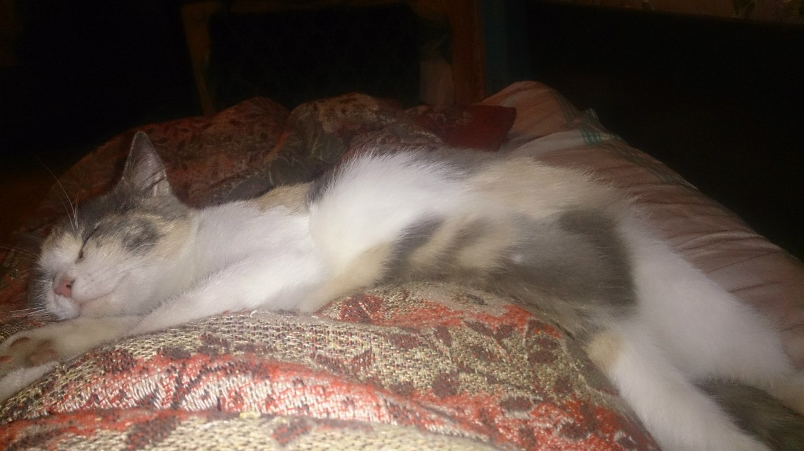
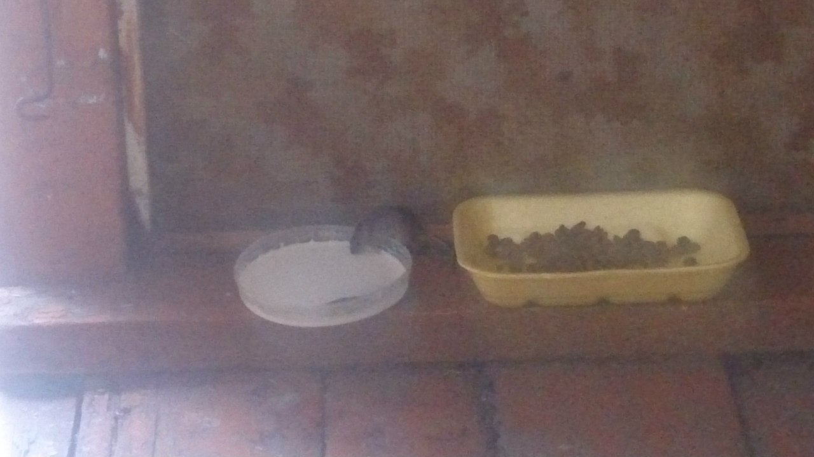
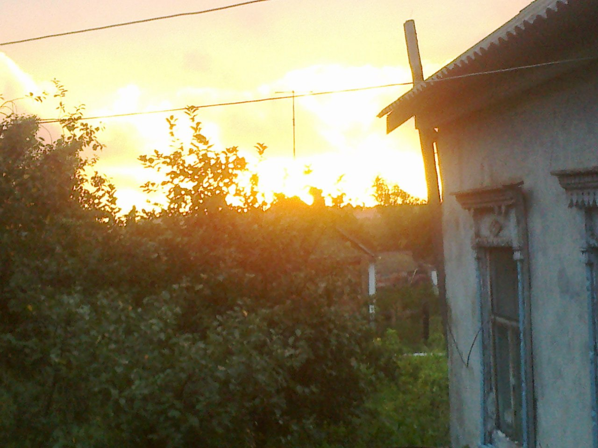
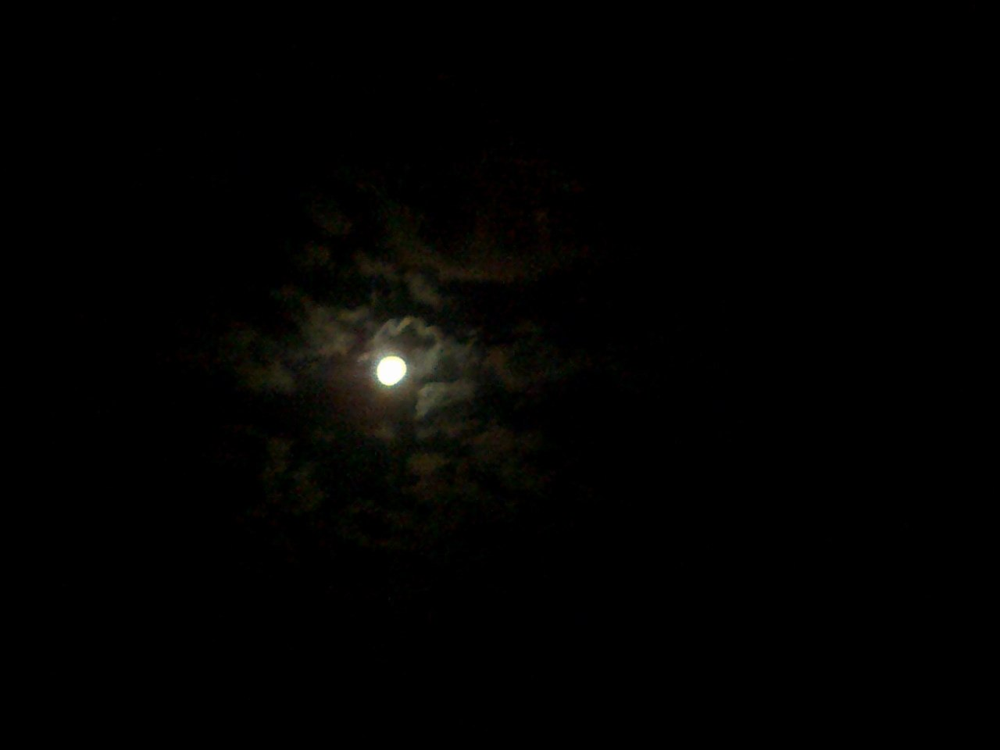
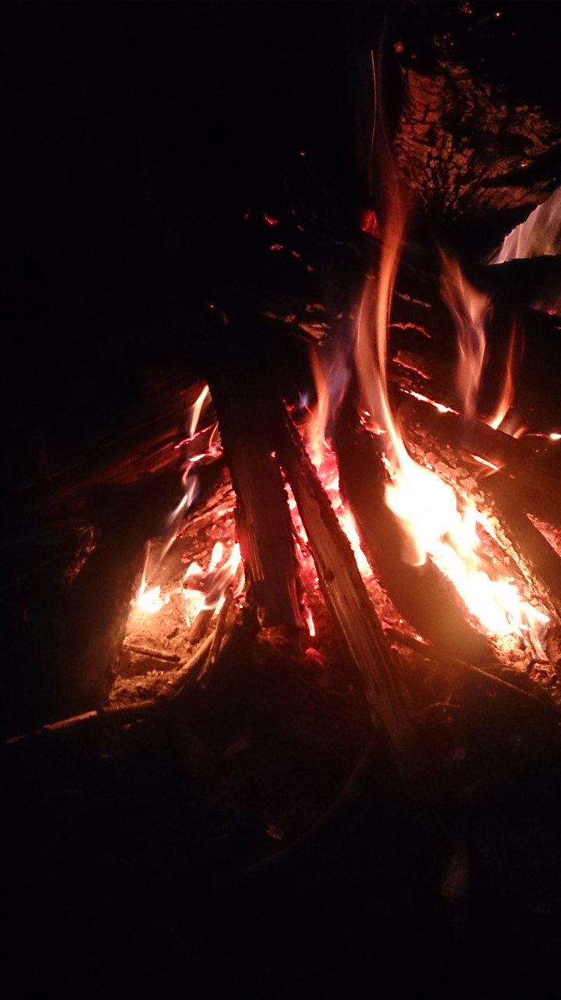
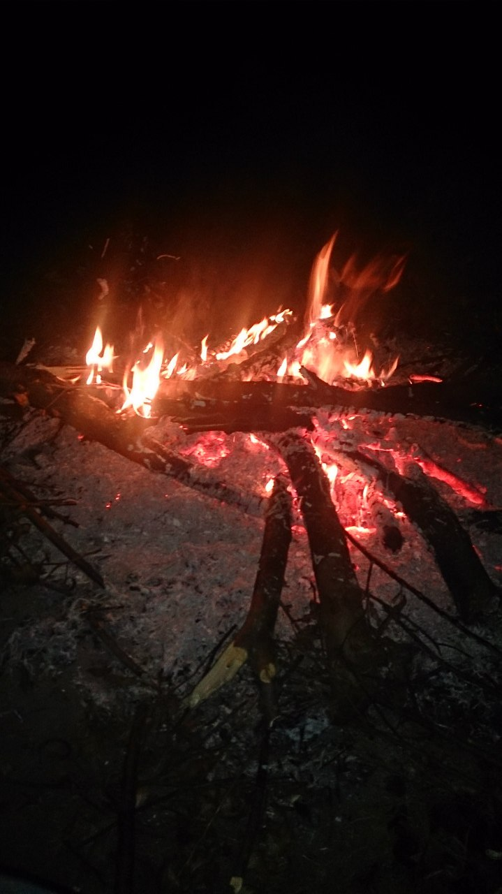

Утро было тихое, город, окутанный тьмой, мирно нежился в постели. Пришло лето, и ветер был летний - тёплое дыханье мира, неспешное и ленивое.
Стоит лишь встать, высунуться в окошко, и тотчас поймёшь: вот она начинается, настоящая свобода и жизнь, вот оно, первое утро лета.
- Дедушка, они уже созрели?
Дедушка поскрёб подбородок.
- Пятьсот, тысяча, даже две тысячи - наверняка. Да, да, хороший урожай. Собирать легко, соберите все...
- Ура!
Мальчики заулыбались и с жаром взялись за дело. Они рвали золотистые цветы, цветы, что наводняют весь мир, переплескиваются с лужаек на мощеные улицы,
тихонько стучатся в прозрачные окна погребов, не знают угомону и удержу и все вокруг заливают слепящим сверканием расплавленного солнца.
- Каждое лето они точно с цепи срываются, - сказал дедушка. - Пусть их, я не против. Вон их сколько, стоят гордые, как львы. Посмотришь на них подольше - так и прожгут у тебя в глазах дырку.
Ведь простой цветок, можно сказать, сорная трава, никто ее не замечает, а мы уважаем, считаем: одуванчик - благородное растение.
Они набрали полные мешки одуванчиков и унесли вниз, в погреб. Вывалили их из мешков, и во тьме погреба разлилось сияние. Винный пресс дожидался их, открытый, холодный.
Золотистый поток согрел его. Дедушка передвинул пресс, повернул ручку, завертел - быстрей, быстрей, - и пресс мягко стиснул добычу...
Сперва тонкой струйкой, потом все щедрее, обильнее побежал по желобу в глиняные кувшины сок прекрасного жаркого месяца; ему дали перебродить,
сняли пену и разлили в чистые бутылки из-под кетчупа - и они выстроились рядами на полках, поблескивая в сумраке погреба.
...Вино из одуванчиков - пойманное и закупоренное в бутылки лето. И теперь, когда Дуглас знал, по-настоящему знал, что он живой,
что он затем и ходит по земле, чтобы видеть и ощущать мир, он понял еще одно: надо частицу всего, что он узнал, частицу этого особенного дня - дня сбора одуванчиков - тоже закупорить и сохранить; а потом настанет такой зимний январский день, когда валит густой снег, и солнца уже давным-давно никто не видел, и, может быть, это чудо позабылось, и хорошо бы его снова вспомнить, - вот тогда он его откупорит! Ведь это лето непременно будет летом нежданных чудес, и надо все их сберечь и где-то отложить для себя, чтобы после, в любой час, когда взду-маешь, пробраться на цыпочках во влажный сумрак и протянуть руку...